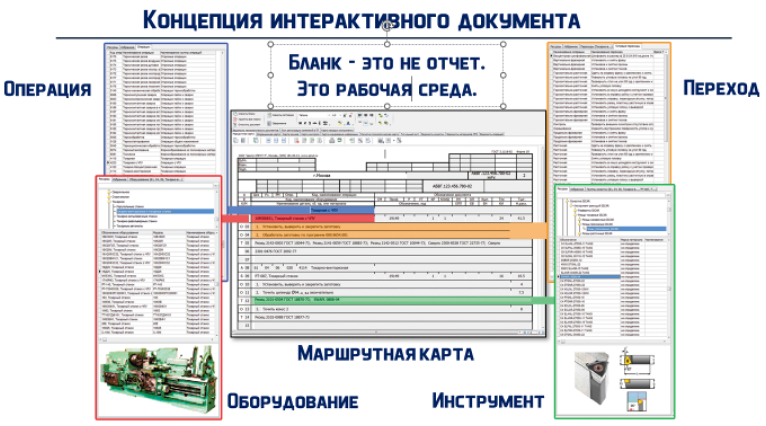
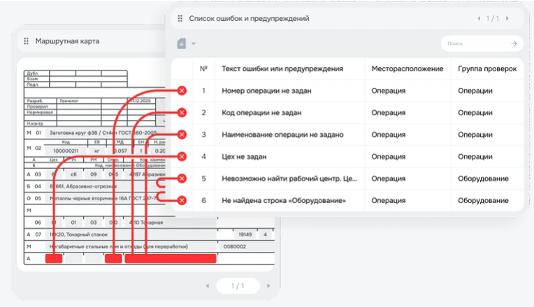
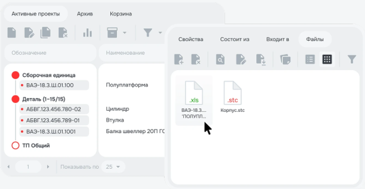

СПРУТ-ТП - автоматизация разработки и нормирования технологических процессов
СПРУТ-ТП – позволяет автоматизировать разработку технологических процессов, а так же производить расчет материального и трудового нормирования.
В СПРУТ-ТП реализована «Технологическая PDM». Хранит все связанные с объектами документы внутри системы (чертежи, 3D-модели, эскизы и др.). Не требует поиск по папкам ПК.


